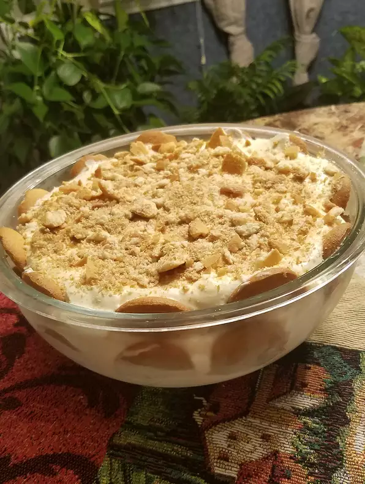

Banana Pudding

Description:
The best no bake banana pudding you
will ever find (or so I've been told by many).
Ingredients:
- 1 (5 ounce) package instant vanilla pudding mix
- 2 cups cold milk
- 1 tablespoon vanilla extract
- 11 (14 ounce) can sweetened condensed milk lemon, juiced
- 1 (16 ounce) package vanilla wafers
- 14 bananas, sliced
Steps:
- In a large mixing bowl, beat pudding mix and milk 2 minutes.
Blend in condensed milk until smooth. Stir in vanilla and
fold in whipped topping. Layer wafers, bananas and pudding
mixture in a glass serving bowl. Chill until serving.
Return to top
Return to main page